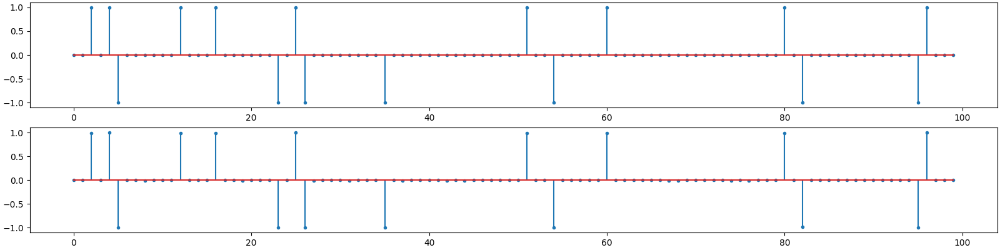

Note
Go to the end to download the full example code
FOcal Underdetermined System Solver (FOCUSS)¶
This is a simple example of using the FOcal Underdetermined System Solver (FOCUSS).
We can use the algorithm to solve a sparse recovery problem from compressive measurements.
# Configure JAX for 64-bit computing
from jax.config import config
config.update("jax_enable_x64", True)
Let’s import necessary libraries
import jax
import jax.numpy as jnp
import cr.nimble as crn
import cr.sparse as crs
import cr.sparse.pursuit.mp as mp
import cr.sparse.data as crdata
import cr.sparse.dict as crdict
import cr.sparse.plots as crplot
import cr.sparse.cvx.focuss as focuss
Problem setup¶
Gaussian sensing matrix
Spikes as sample data
Compressive sensing/measurements
y = Phi @ x0
FOCUSS with p=1¶
FOCUSS step by step
FOCUSS method full
iterations=10
m=50, n=100, k=16
r_norm=6.892023e-15
x_norm=4.000000e+00
Metrics
snr = crn.signal_noise_ratio(x, x_hat)
prd = crn.percent_rms_diff(x, x_hat)
n_rmse = crn.normalized_root_mse(x, x_hat)
print(f'SNR: {snr:.2f} dB, PRD: {prd:.2f} %, N-RMSE: {n_rmse:.2e}')
SNR: 272.70 dB, PRD: 0.00 %, N-RMSE: 2.32e-14
Plot the solution

<StemContainer object of 3 artists>
FOCUSS with p=0.5¶
FOCUSS step by step

FOCUSS method full
iterations=10
m=50, n=100, k=16
r_norm=2.088181e-15
x_norm=3.981269e+00
Metrics
snr = crn.signal_noise_ratio(x, x_hat)
prd = crn.percent_rms_diff(x, x_hat)
n_rmse = crn.normalized_root_mse(x, x_hat)
print(f'SNR: {snr:.2f} dB, PRD: {prd:.2f} %, N-RMSE: {n_rmse:.2e}')
SNR: 43.89 dB, PRD: 0.64 %, N-RMSE: 6.39e-03
Plot the solution
<StemContainer object of 3 artists>
Total running time of the script: (0 minutes 4.197 seconds)